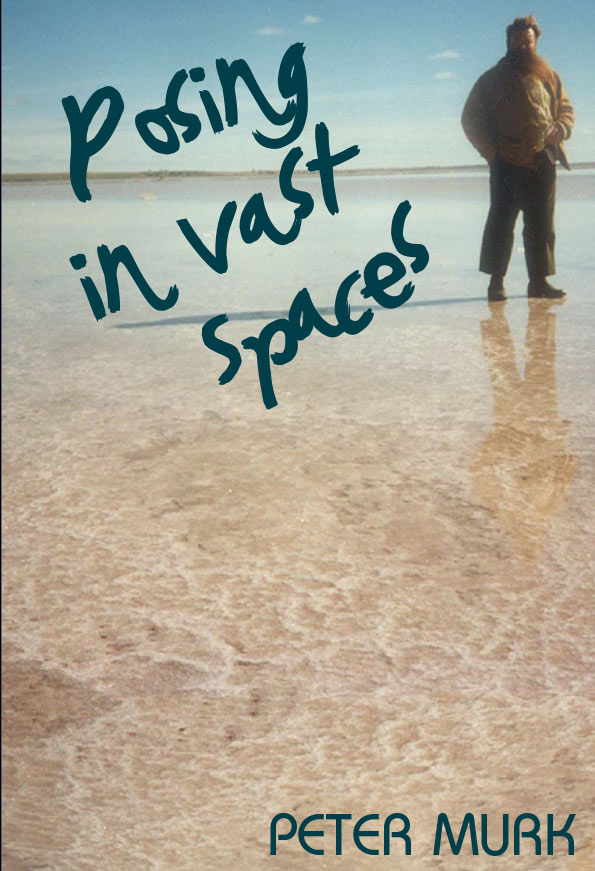
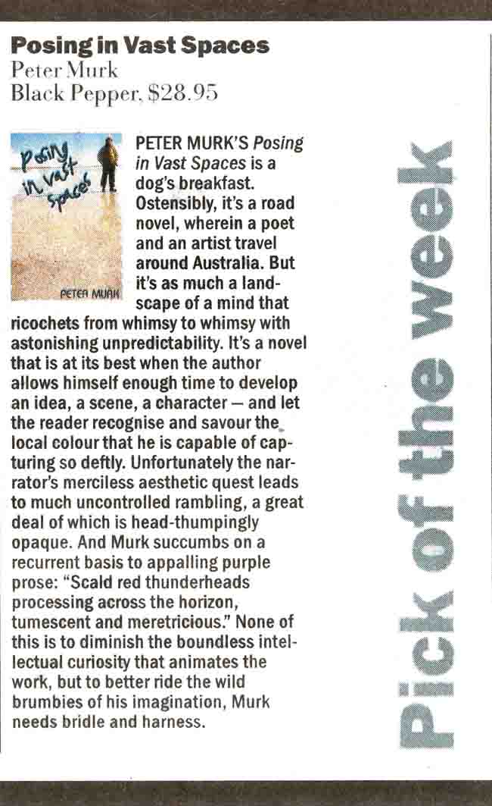

 Posing in Vast SpacesPeter Murk This remarkable book strongly reminiscent of Jack Hibberd’s classic one-man play A Stretch Of The Imagination Kerryn Goldsworthy, The Sydney Morning Herald |
| Down to Book Description Book Sample |
Down
to Book Reviews The Sydney Morning Herald PICK OF THE
WEEK
The
Age |
Down
to
Launch Speech by Andrew Bock |
Murk biography | Next title Previous title Home page All publications |
|
Book Description
Before I describe true beauty, let me describe the ashtray in front of me. A browny-red bakelite McWilliam’s Cream Sherry job duly embossed and shaped into the coastline of Australia. Imagine the tales and torment heard and inflicted over this common object. What other country would allow this?
As much a travelling salon as a road novel, Posing in Vast Spaces is an object lesson in the art of digression. Our narrator, a poet, is an aesthete. He is given to frivolity, drinking, ogling, cloudwatching, research into town bakeries and japes. His fellow traveller is a landscape painter, upright and dedicated to his immortal daubs. Their common companion is My Darling Chevrolet. Together they head inland to sing and paint the dead lakes. On the drought-stricken land the locals are resilient in their good humour. Our Dionysian and Apollonian heroes are like vagabond wraiths in comparison.
Peter Murk’s picaresque novel is a love song to his country. He dotes on the vernacular as though he has discovered a lost dialect. Posing in Vast Spaces is seriously funny.
ISBN 9781876044572
Published 2008
256 pgs
Posing in Vast Spaces book sample
Back to top
Reviews
Posing in Vast Spaces
PICK OF THE WEEK
SYDNEY MORNING HERALD
Kerryn Goldsworthy
The Sydney Morning Herald, 16 August June 2008
This remarkable book is accurately described on the cover as a combination of travelling salon and road novel. The narrator, a poet, takes off on a road trip with his artist friend Matthew in a car called My Darling Chevrolet. They travel deep into the wilds of country Victoria, where they travel around painting, drinking, chatting up the local ladies, smoking dope and - most of all - talking.
You would have to call this book a celebration and the two main things it’s celebrating are the country-Victorian landscape and the great joys and pleasures of conversation with someone you've known very well for a long time and whose mind travels along the same track as your own.
Peter is a poet and can therefore get drunk on words as easily as on beer and the many other beverages he samples as he and Matthew trundle around the landscape from town to town and pub to pub; their conversations, like the narrator’s own description of the trip, are full of puns, quotations, double entendres and other wordplay. There are also endless allusions to culture both popular and high, a potential disadvantage since readers unfamiliar with them will miss all the best jokes.
In this, as in its setting and its indiscriminate and unremitting mockeries, the book is strongly reminiscent of Jack Hibberd’s classic one-man play A Stretch Of The Imagination. The story of the road trip is told in smallish fragments, the smallest of which features the title ‘Nhil’ (the unfortunate name of a Victorian town) at the head of a blank space, a silly yet irresistible joke.
It’s impossible to describe the quality of Murk’s style or to pick out an example; it needs to be read properly and with care. There’s a kind of tumbling ebullience and complete lack of restraint about its playfulness that some readers might find excessive but that others will embrace.
Back to top
Posing in Vast Spaces
PICK OF THE WEEK
Cameron Woodhead
The Age, 21 June 2008

Back to top
Launch
Speech
Posing in Vast Spaces was launched by Julian Burnside, President of Liberty Victoria and author of Wordwatching: Fieldnotes of an Amateur Philologist, on 13 September 2008 at Claypots Seafood Restaurant in St Kilda.
Andrew Freeman Bock
13 September 2008
Travel in Australia is a rite of passage on every long weekend. The travel story as a form in literature is a great device for believable journeys into alternate worlds. It also lends itself as a form to anecdotes, colloquial conversation and improvised drama.
The form includes the writings of Jack Kerouac, the mad fancies of Tristram Shandy, the hilarious discursions of Flann O’Brien and that dense and intense urban travelogue, Ulysses.
Posing in Vast Spaces is 150 vignettes and 243 pages from a three day road trip through St Kilda, Prahran, north western Victoria and back again.
In great Australian tradition, Murk’s travelogue is full of dirty and absurd realism and wicked but arid irony. His north western Victoria is a suitably dry country watered only by intermittent streams of consciousness and wit.
At a simple level, Posing belongs to a literary tradition in Australia that sits around a camp fire with Tom Collins (Such is Life) and Henry Lawson. But this is a new Australian travel story and takes the form of the Australian travelogue a few steps beyond those ironic bush sketchers.
The convivial and impressively self-deprecating narrator of this book is just as comfortable with classical literary allusions, poetic descriptions and popular culture references as he is with colloquial, country Australia. He is also a master of the elliptical vignette.
This would not suprise those who know the author. Peter Murk, a gardener and writer, is as comfortable with non-sequiturs as he is with a pair of secateurs.
But with Posing in Vast Spaces he has created an incredibly entertaining yarn out of that age old Australian tension between low culture, or bush Australia, and high culture and literary allusion.
It is his ability to navigate both, from the seat of an old Chevrolet, of all cars, that is a really great achievement. He has actually discovered, on this three day odyssey, a delightful new solution to the age old tension in Australia between the cultures of the city or Europe and the cultures of the bush.
Murk’s central character is not travelling through the Wimmera and the Mallee so much as he is straddling the tension between high literature and bush yarns. The tension between the cultured and the stoic, the poetic and the prosaic. The absurdity and the importance of posing in vast, open spaces.
This is quite liberating.
This shambling and eloquent wanderer may just have found a new solution to a cultural conflict that has plagued Australian history.
Even through conversations at a bar or outside a bakery or leaning on a bonnet looking at a salt lake, like all great literature this book imparts a new way of describing and with it, a new way of seeing.
It also breathes life and passion into a neglected Australian tradition for rye and incredulous observation. It combines the pleasures of a good yarn, a great travelogue and a poetic journey into the vernacular soul of Australia. And it’s hilarious.
I don’t think anyone can read this book without discovering a deeper love for Australia.

Peter Murk book signing
at Claypots
Back
to top
Murk biography